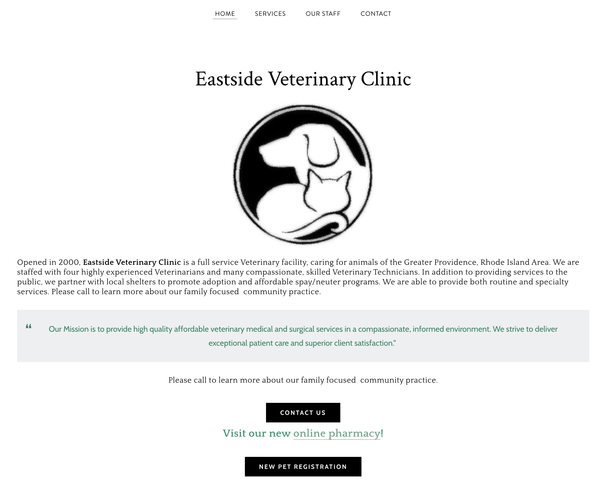
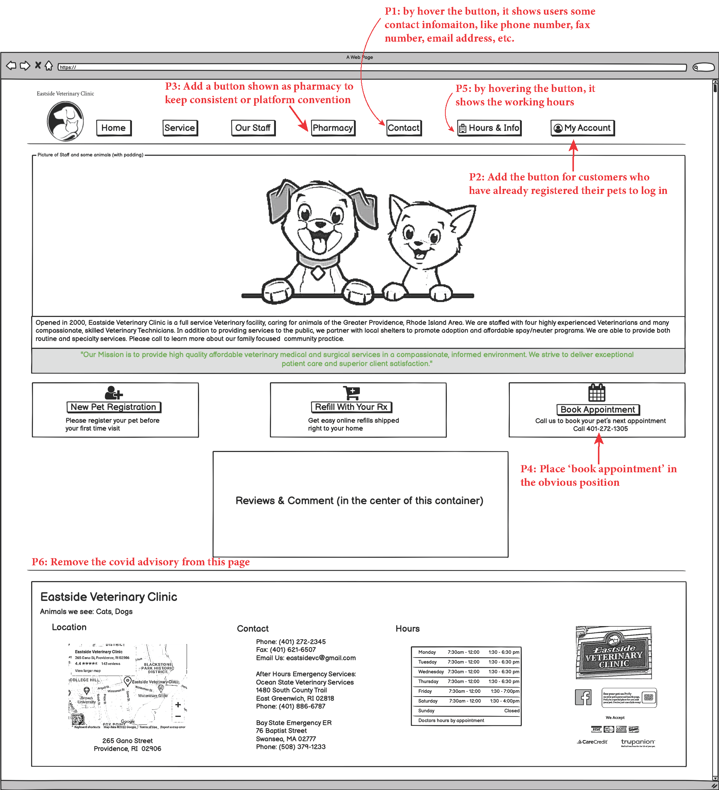
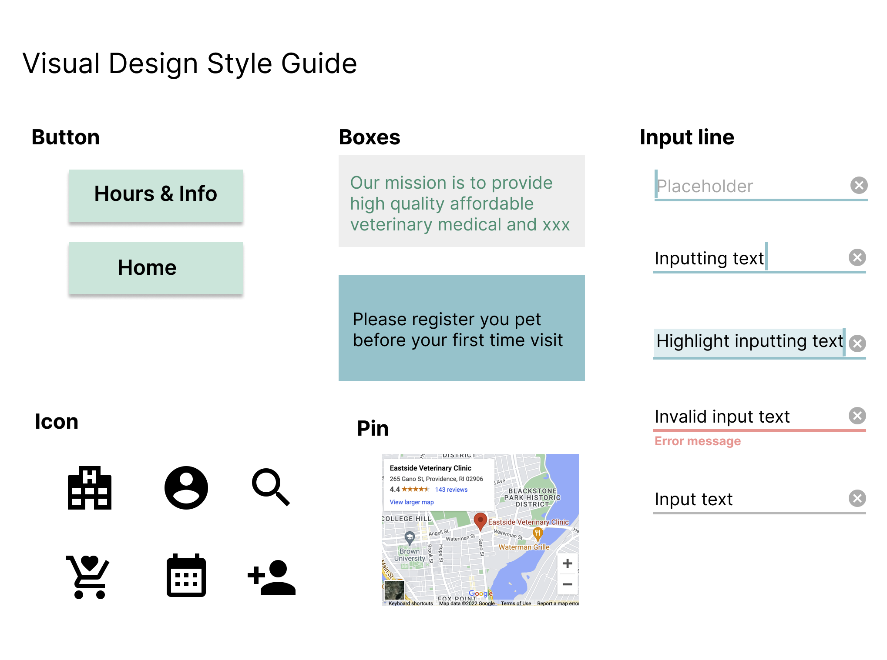
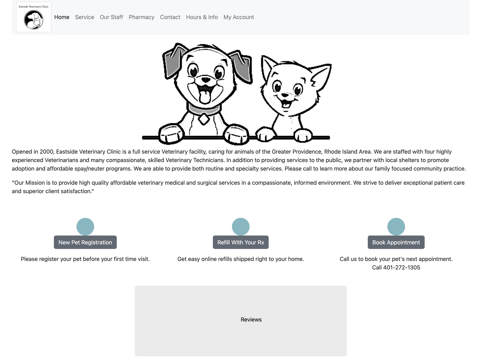
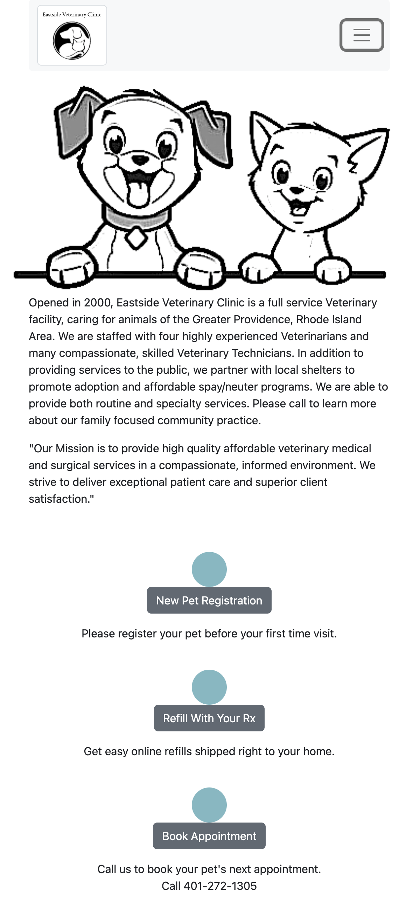

Responsive Redesign
Identifying Usability Problems
Picking a Web Page: one of the local veterinary clinic
The screenshot

The link is here
Reasoning: This is a webpage of one of the local veterinary clinics, Eastside Veterinary Clinic, which is viewable by anyone without creating an account but with poor design.
Finding Problems
After investigating and analyzing the usability of the web page (usability, learnability, and memorability) and thinking about its conceptual model, I found the following problems:
- CONTACT US button should provide the user with some contact information like phone number, fax number, email address, etc. But the current CONTACT US just jumps to the email box with a new email without any additional useful information.
- There's only NEW PET REGISTRATION button/option for new customers/users, No option for customers who have already registered their pets to log in.
- It didn't keep consistency or platform conventions. Visit our new online pharmacy! should be kept consistent as a button shown as Pharmacy.
- When users are browsing this webpage, one of the most important information they care about is how to book an appointment, there is not any related info or text about it. And it should be placed in the obvious position on this webpage.
- Working hours are another important piece of information that the users what to know. It should be placed in some obvious position like the tabs on the top of this webpage to avoid users taking efforts to look for it.
- The covid advisory should be removed from this webpage, because this webpage is expected to provide users some general information about this vet clinic rather than displaying some specific instructions for certain time period or situations. The covid advisory can be moved to another webpage after users click book appointment button.
Accessibility
- I agree with most of the problems detected.
- The structure of this webpage is not well organized, for example, it doesn't have a first-level heading.
- Several different images have the same alternative text, this is not good.
- WebAIM WAVE detected several very low contrasts with a contrast ratio of 4.29:1, they specifically refer to those red fonts on white backgrounds. But when browsing this webpage, the contrast for those text looks not so bad as it detected.
Visual Redesign
Low-Fidelity Wireframing (annotations on the wireframe for desktop to avoid redundancy, because different screen sizes have the same UI elements )
For Desktop (this wireframe mimics the action of scrolling down, put everything in one wireframe), where P1 represents the UI element that addressed the corresponding problems in Part 1 and etc:

For tablet (this wireframe mimics the action of scrolling down, put everything in one wireframe):

For mobile (this wireframe mimics the action of scrolling down, put everything in one wireframe):

Visual Design Style Guide
Here is my visual design style guide:

High-Fidelity Prototyping (annotations on desktop version to avoid redundancy, because different screen sizes have the almost same UI elements)
For Desktop (it mimics the action of scrolling down, put everything in one page)

For Tablet (it mimics the action of scrolling down, put everything in one page)

For Phone (it mimics the action of scrolling down, put everything in one page)

Responsive Redesign
The link to my responsively redesigned page is here
A screenshot the responsive redesign page in Desktop:

A screenshot the responsive redesign page in Tablet or phone:

THANK YOU FOR READING THIS PAGE!